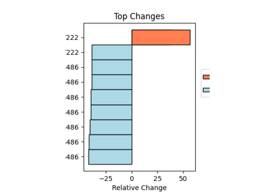
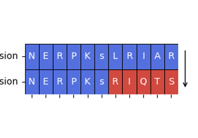
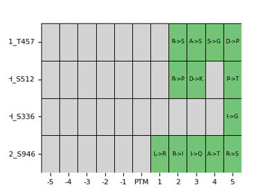
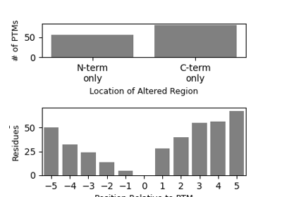

Analyzing altered flanking sequences#

Kinase affinity due to PTM flanking sequence alterations
Kinase affinity due to PTM flanking sequence alterations

Inspect difference of flanking sequence due to splice event
Inspect difference of flanking sequence due to splice event

Identify altered SH2 domain motifs
Identify altered SH2 domain motifs

Probing where and how PTM flanking sequences are altered
Probing where and how PTM flanking sequences are altered